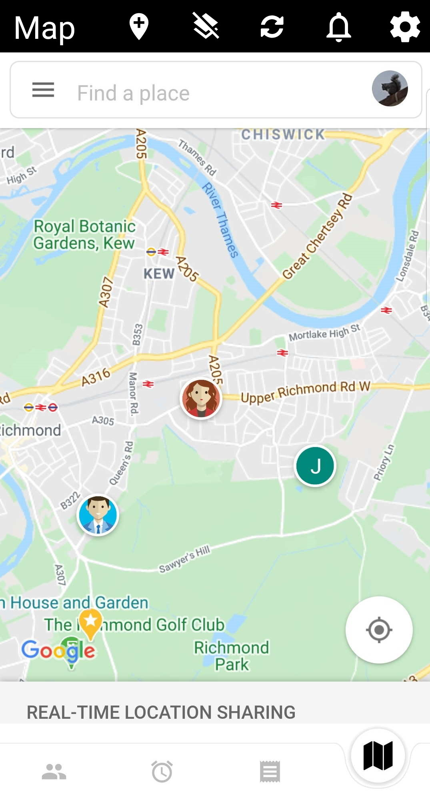
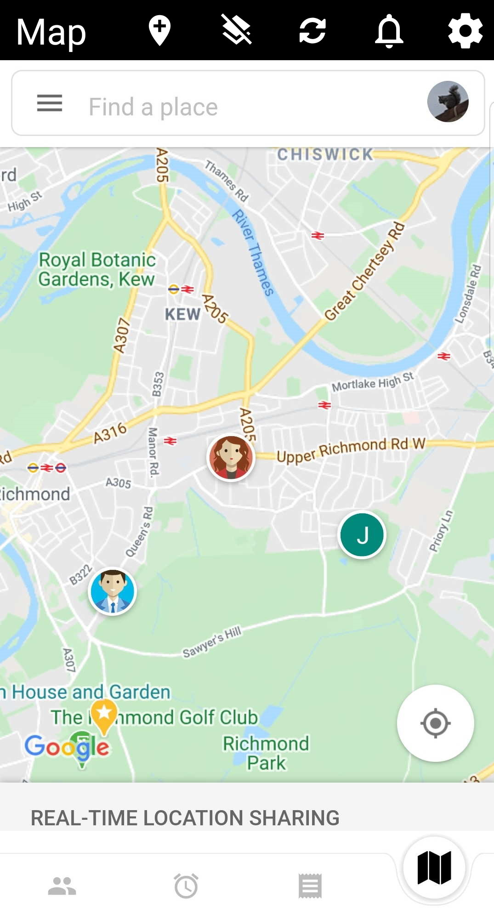

Family Monitor is a very simple app that works alongside Google Maps. Most of the configuration that Family Monitor uses is set through the Google Maps interface either via the Maps browser interface or the Maps app. Firstly, ask your family to allow Google Maps to share their locations with you and then use Google Maps to define locations that will be used to configure Family Monitor alerts. For example, the location of your home and of your children's schools.
Within Family Monitor define the alerts you require which are in the form of:
Note that you refer to yourself as Me. And that's it!


 


Tap a family member to view their location on the Map tab.
Slide, left or right, an alert to delete or edit it. Tap an alert to view the object of the alert's location on the Map tab. If you are using a non-touchscreen device, such as a Fire TV, press or long-press the remote's select button for these options.
Slide left a fired alert to delete it. Tap a fired alert to view the object of the alert's location on the Map tab.
A browser view of Google Maps.
The following can be found on the settings page which is accessible via the cog button.
How frequently to request an update of your family's locations from Google. A value lower than every two minutes is not possible.
Whether to automatically reset an alert. For example, if an alert is set to fire when James is closer than 100m from home:
How long to wait before resetting the alert. In the above example, the Alert Reset Period is, at step 2, how long James has to be further than 100m from home before the alert auto resets.
If enabled, Family Monitor will alert if someone has not been seen for a period defined by the No Update Period setting. The period should not be too short since there may be extensive period where Google Maps is not updated with a new location.
Notifications produced by Family Monitor can be quite subtle and hence easily missed. If it is important not to miss a notification, an alarm can also be used which will sound when a notification is produced.
If selected, the local device (i.e. the device running Family Monitor) will use its GPS to obtain its location instead of the location reported by Google Maps. All other family locations are still obtained from Google Maps.
Whether the metric or imperial system should be used.
Family Monitor does not ask for, process or store any personal information apart from the names of the family members associated with alerts that the user creates. These alerts are only stored on the device running Family Monitor. In addition, the only network communication is to addresses (URLs) within the Google.com domain and to cyferorg.github.io when displaying this help page.